df <- read.csv("vis-decode-slider_all_tidy.csv") %>% as_tibble(.)
df %>% count(participantId)Preliminary analysis
Let us first read in the file and do some very simple pruning:
Rows where n < 492 are unfinished trials. After filtering those out, there should be 10 valid trials — 1 done by Maryam, 1 done by Lily, 8 done by me. Let’s pull out these ids for future filtering purposes:
ids <- df %>% count(participantId) %>% filter(n == 492) %>% pull(participantId)
# make sure that og dataframe does not include data that has incomplete answers
df <- df %>% filter(participantId %in% ids)For now, let’s pull out the answers related to test trials into a new dataframe — task_df.
# create a separate dataframe for just test related trials
task_df <- df %>% filter(grepl("task", trialId) & grepl("test", trialId) ) %>%
select(participantId, trialId, responseId, answer) %>%
mutate(answer = as.numeric(answer)) %>%
pivot_wider(names_from = responseId, values_from = answer, names_repair = "universal") %>%
separate_wider_delim(trialId, delim = "_", names = c("task", "type", "id")) %>%
select(-type) %>%
rename(data.select.x = location.x,
data.select.y = location.y,
pixel.select.x = pixel.x,
pixel.select.y = pixel.y)New names:
• `location-x` -> `location.x`
• `location-y` -> `location.y`
• `pixel-x` -> `pixel.x`
• `pixel-y` -> `pixel.y`
• `param-mu` -> `param.mu`
• `param-sigma` -> `param.sigma`
• `param-lambda` -> `param.lambda`
• `param-p` -> `param.p`
• `param-q` -> `param.q`
• `slider-x` -> `slider.x`
• `slider-y` -> `slider.y`task_df %>% head(5)Properties of the 5 distributions parameters
Let us plot the distribution at different values to get a better sense of how things work. The default parameters are mu = 0, sigma = 1, lambda = 0, p = 3, q = 10
Varying mean \(\mu\)
Code
x_vals <- seq(-5, 5, 0.01)
mus <- c(-2, -1, 0, 1, 2)
# Create a function that generates PDF values for a specific mean
generate_pdf_data <- function(mean_val, x_values) {
tibble(
x = x_values,
density = dsgt(x_values, mu = mean_val, sigma = 1, lambda = 0, p = 3, q = 10),
mean = as.factor(mean_val)
)
}
# Generate data for all means
plot_data <- map_dfr(mus, ~generate_pdf_data(.x, x_vals))
# Plot with ggplot2
ggplot(plot_data, aes(x = x, y = density, color = mean)) +
geom_line() +
labs(title = "SGT Distributions with Different Means",
x = "x", y = "Density") +
scale_color_brewer(palette = "RdYlBu") +
ylim(0, 1) +
xlim(-5, 5)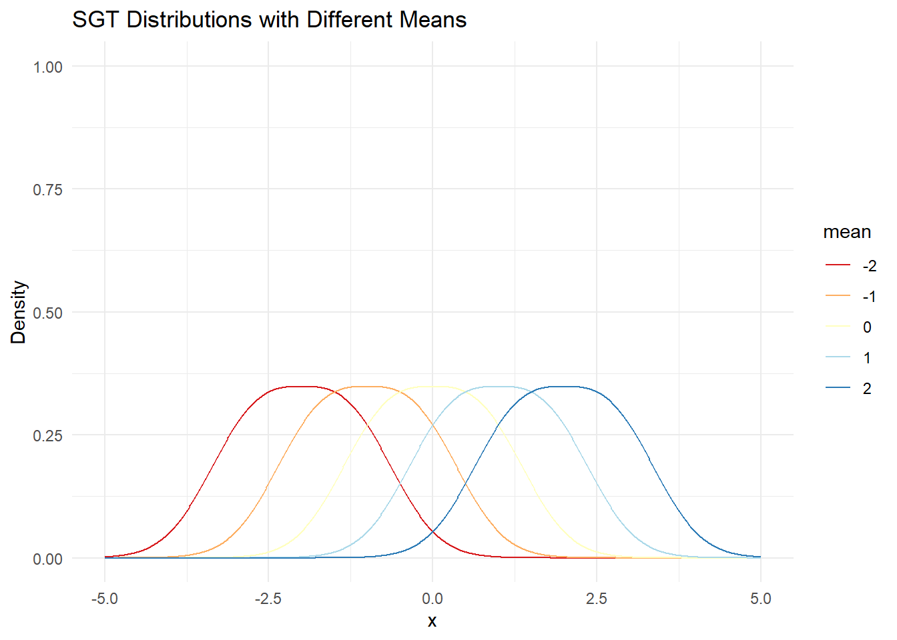
Varying sigma \(\sigma\)
Note that \(\sigma \sim \text{Uniform}[0.5, 2.5]\).
Code
x_vals <- seq(-5, 5, 0.01)
sigmas <- c(0.5, 1, 1.5, 2, 2.5)
# Create a function that generates PDF values for a specific mean
generate_pdf_data <- function(sig_val, x_values) {
tibble(
x = x_values,
density = dsgt(x_values, mu = 0, sigma = sig_val, lambda = 0, p = 3, q = 10),
var = as.factor(sig_val)
)
}
# Generate data for all means
plot_data <- map_dfr(sigmas, ~generate_pdf_data(.x, x_vals))
# Plot with ggplot2
ggplot(plot_data, aes(x = x, y = density, color = var)) +
geom_line() +
labs(title = "SGT Distributions with Different Variance",
x = "x", y = "Density") +
scale_color_brewer(palette = "RdYlBu") +
ylim(0, 1) +
xlim(-5, 5)
Varying skewness \(\lambda\)
Note that \(\lambda \sim \mathcal{N}(0, 0.33)\).
Code
x_vals <- seq(-5, 5, 0.01)
lambdas <- c(-0.66, -0.33, 0, 0.33, 0.66)
# Create a function that generates PDF values for a specific mean
generate_pdf_data <- function(lambda_vals, x_values) {
tibble(
x = x_values,
density = dsgt(x_values, mu = 0, sigma = 1, lambda = lambda_vals, p = 3, q = 10),
lambda = as.factor(lambda_vals)
)
}
# Generate data for all means
plot_data <- map_dfr(lambdas, ~generate_pdf_data(.x, x_vals))
# Plot with ggplot2
ggplot(plot_data, aes(x = x, y = density, color = lambda)) +
geom_line() +
labs(title = "SGT Distributions with Different Skewness",
x = "x", y = "Density") +
scale_color_brewer(palette = "RdYlBu") +
ylim(0, 1) +
xlim(-5, 5)
Varying \(p\)
Note that \(p \sim \text{Uniform}[2, 4]\).
Code
x_vals <- seq(-5, 5, 0.01)
ps <- c(2, 2.5, 3, 3.5, 4)
# Create a function that generates PDF values for a specific mean
generate_pdf_data <- function(p_vals, x_values) {
tibble(
x = x_values,
density = dsgt(x_values, mu = 0, sigma = 1, lambda = 0, p = p_vals, q = 10),
p = as.factor(p_vals)
)
}
# Generate data for all means
plot_data <- map_dfr(ps, ~generate_pdf_data(.x, x_vals))
# Plot with ggplot2
ggplot(plot_data, aes(x = x, y = density, color = p)) +
geom_line() +
labs(title = "SGT Distributions with Different p (lambda= 0)",
x = "x", y = "Density") +
scale_color_brewer(palette = "RdYlBu") +
ylim(0, 1) +
xlim(-5, 5) -> p1
# Create a function that generates PDF values for a specific mean
generate_pdf_data <- function(p_vals, x_values) {
tibble(
x = x_values,
density = dsgt(x_values, mu = 0, sigma = 1, lambda = 0.3, p = p_vals, q = 10),
p = as.factor(p_vals)
)
}
# Generate data for all means
plot_data <- map_dfr(ps, ~generate_pdf_data(.x, x_vals))
# Plot with ggplot2
ggplot(plot_data, aes(x = x, y = density, color = p)) +
geom_line() +
labs(title = "SGT Distributions with Different p (lambda = 0.3)",
x = "x", y = "Density") +
scale_color_brewer(palette = "RdYlBu") +
ylim(0, 1) +
xlim(-5, 5) -> p2
p1
p2
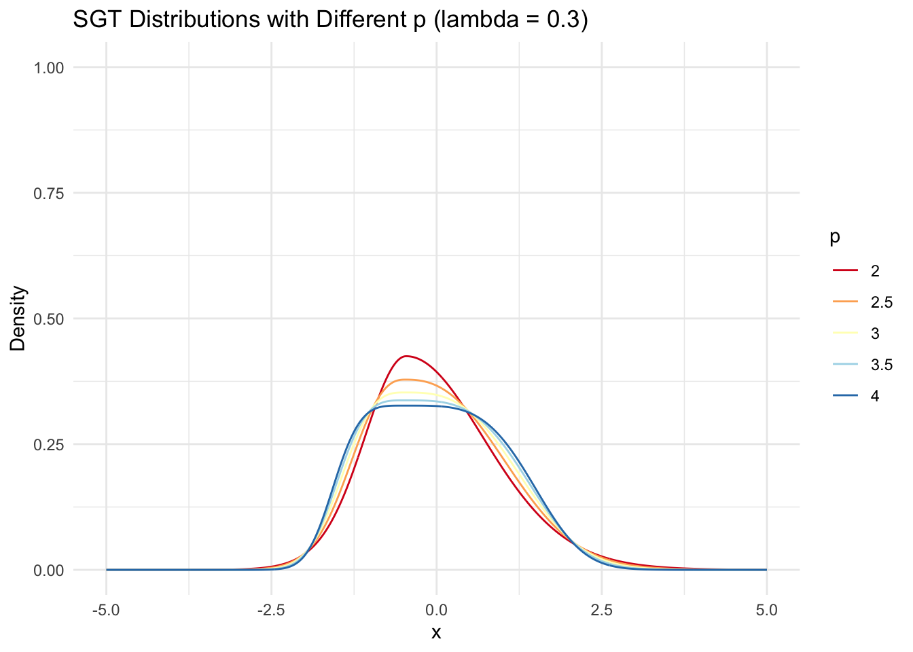
Varying \(q\)
Note that \(q \sim \text{Uniform}[1, 50]\).
Code
x_vals <- seq(-5, 5, 0.01)
qs <- c(1, 2, 10, 30, 50)
# Create a function that generates PDF values for a specific mean
generate_pdf_data <- function(q_vals, x_values) {
tibble(
x = x_values,
density = dsgt(x_values, mu = 0, sigma = 1, lambda = 0, p = 3, q = q_vals),
q = as.factor(q_vals)
)
}
# Generate data for all means
plot_data <- map_dfr(qs, ~generate_pdf_data(.x, x_vals))
# Plot with ggplot2
ggplot(plot_data, aes(x = x, y = density, color = q)) +
geom_line() +
labs(title = "SGT Distributions with Different q (lambda = 0)",
x = "x", y = "Density") +
scale_color_brewer(palette = "RdYlBu") +
ylim(0, 1) +
xlim(-5, 5) -> p1
# Create a function that generates PDF values for a specific mean
generate_pdf_data <- function(q_vals, x_values) {
tibble(
x = x_values,
density = dsgt(x_values, mu = 0, sigma = 1, lambda = 0.3, p = 3, q = q_vals),
q = as.factor(q_vals)
)
}
# Generate data for all means
plot_data <- map_dfr(qs, ~generate_pdf_data(.x, x_vals))
# Plot with ggplot2
ggplot(plot_data, aes(x = x, y = density, color = q)) +
geom_line() +
labs(title = "SGT Distributions with Different q (lambda = 0.3)",
x = "x", y = "Density") +
scale_color_brewer(palette = "RdYlBu") +
ylim(0, 1) +
xlim(-5, 5) -> p2
p1
p2

Functions that transform data to pixels to physical distance to visual angles
We know that the actual svg have these properties:
- height: 450, width: 600
- margin: top 15, right 15, bottom 40, left 50
And here a diagram to better illustrate:

# define functions
data_to_pixel_y <- function(data_y) {
return(-395 * data_y + 410)
}
data_to_pixel_x <- function(data_x) {
return (53.5 * data_x + 317.5)
}We can verify whether the above functions actually hold by checking the transformed results with the captured pixel coordinates. The results look good so I am skipping this part.
Code
task_df %>% select(data.select.x, data.select.y, pixel.select.x, pixel.select.y) %>%
mutate(calculated.x = sapply(data.select.x, data_to_pixel_x),
calculated.y = sapply(data.select.y, data_to_pixel_y)) %>%
mutate(x_diff = round(pixel.select.x - calculated.x, 2),
y_diff = round(pixel.select.y - calculated.y, 2)) %>%
pull(y_diff)We map from pixel coordinates to physical distances by using the pixelsPerMM parameter we captured during the calibration process.1
1 A small problem here is that during some trials, I got impatient and didn’t fully do the calibration and just went with whatever default solutions I had. TLDR — for some trials, the pixelsPerMM value is 3.27. For some trials, it’s 3.73. To avoid confusion, I am manually creating a custom dataframe here but for future purposes, this should not be created by hand.
Some of the prolificId are quite long, and that’s because I was debugging an issue related to ReCAPTCHA.
df %>% filter(participantId %in% ids) %>%
filter(grepl("pixelsPerMM", responseId) | grepl("prolificId", responseId)) %>%
select(participantId, responseId, answer) %>%
pivot_wider(names_from = responseId, values_from = answer)For the sake of this analysis, I am manually creating and using a custom pixel_to_mm data frame.
p <- df %>% filter(participantId %in% ids) %>%
filter(grepl("pixelsPerMM", responseId) | grepl("prolificId", responseId)) %>%
select(participantId, responseId, answer) %>%
pivot_wider(names_from = responseId, values_from = answer) %>%
pull(participantId)
# custom dataframe
pixel_to_mm <- data.frame(participantId = p,
pixelToMM = c(3.73, 3.27, 3.27, 5.03, 3.73, 3.25, 3.73, 3.27, 3.73, 3.27)
)Now that we know what the pixelsPerMM parameter is, we can write functions that transform pixel values into physical distances (measured in mm). Note that we need to do some transforms2 because of the way direction works in svgs are counter-intuitive …:
2 … specifically, distance to the x-axis would be the y-coordinate, which would be 410 - pixel.select.y. Distance to the y-axis would be the x-coordinate, which would be pixel.select.x - margin.left.
# define functions
pixel_to_phy_x <- function(pixel, pxMM){
(pixel - 50) / pxMM
}
pixel_to_phy_y <- function(pixel, pxMM){
(410 - pixel) / pxMM
}Now that we can calculate physical distances, we can transform them into visual angles since we know how far the participant is sitting away from the screen (dist_to_screen).3
3 Again, from some test trials, I didn’t fully do the calibration tasks, so I am again manually defining a dataframe here.
# custom data frame
vis_distance <- data.frame(participantId = p,
dist_to_screen = c(426, 502, 500, 495, 485, 987, 635, 500, 479, 563))We use the following equation to obtain the visual angle:
\[\text{visual angle} = 2 \times \text{tan}^{-1}\left( \frac{\text{size}}{ 2 \times \text{distance to screen}} \right)\]
# corresponding function
vis_angle <- function(size, distance){
return(2 * atan(size / (2 * distance)) * 180 / pi)
}Now that these functions are ready, we are ready to perform data analysis in all possible spaces — data space, pixel space, visual angle space.
Following Matt’s advice, let us create a single dataframe that keeps track of the all the information related to participants:
participants <- pixel_to_mm %>% left_join(vis_distance, by = join_by(participantId))
participantsTask 1 — PDF Median — Split area into equal halves
# first we create separate dataframe for task 1
task1_df <- task_df %>% filter(task == "task1") %>%
select(-slider.x, -slider.y) %>%
mutate(left_area = psgt(data.select.x, param.mu, param.sigma,
param.lambda, param.p, param.q, mean.cent = F))
task1_df %>% head(5)Let’s see if there’s any relation between lambda, p, q, and area to the left of the selection:
Weird missing data error
There is one row that contains NA value, which is weird …
task1_df %>% filter(if_any(everything(), is.na))# let's try to plot this
x_val <- seq(-5, 5, 0.01)
y_val <- dsgt(x_val, mu = -0.3, sigma = 0.8, lambda = 0, p = 2.9, q = 46.9, mean.cent=F)
data.frame(x = x_val, y = y_val) %>%
ggplot(aes(x=x, y=y)) +
geom_line() +
xlim(-5, 5) +
ylim(0, 1)
# let's try cdf
y_val <- psgt(x_val, mu = -0.3, sigma = 0.8, lambda = 0, p = 2.9, q = 46.9, mean.cent=F)
data.frame(x = x_val, y = y_val) %>%
ggplot(aes(x=x, y=y)) +
geom_line() +
xlim(-5, 5) +
ylim(0, 1)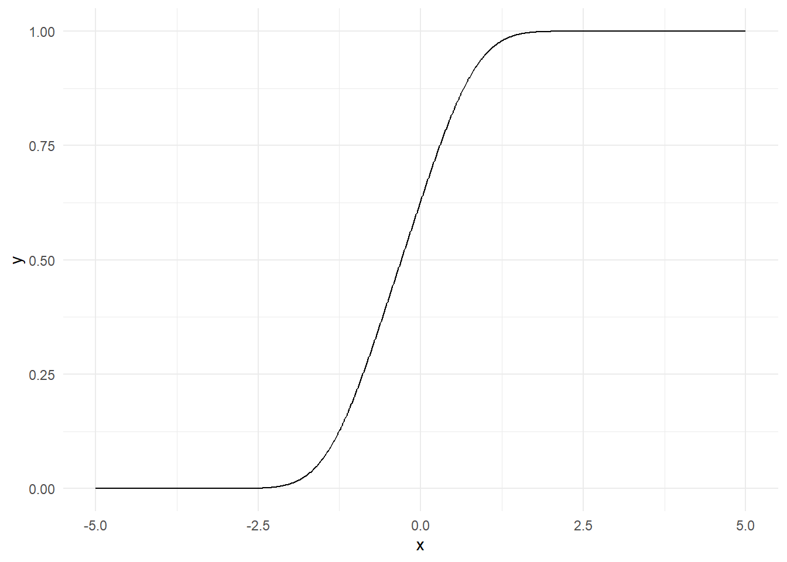
The above all seems to be working … Let’s calculate left area separately:
psgt(-0.3, mu = -0.3, sigma = 0.8, lambda = 0, p = 2.9, q = 46.9, mean.cent=F)[1] NaNIt is unclear why the above gives me a NaN answer … Moving on …
Could the participants be using the highest point as a way to judge area?
Code
# data space
task1_df %>%
ggplot(aes(x = param.lambda, y = data.select.x - param.mu)) +
geom_point(alpha = 0.5) +
geom_hline(yintercept = 0, linetype="dashed", color="gray") +
labs(title = "Task 1 -- Data")
Code
# facet by participant
task1_df %>%
ggplot(aes(x = param.lambda, y = data.select.x - param.mu)) +
geom_point(alpha = 0.5) +
labs(title = "Task 1 -- Data") +
geom_hline(yintercept = 0, linetype="dashed", color="gray") +
facet_wrap(~participantId)
Could it be that the more symmetric a pdf looks, the more likely that its going to be “pulled” towards using mode as a substitute?
There seems to be some relation between lambda and left_area. Note that we are sampling \(\lambda \sim \mathcal{N}(0, 0.33)\).
Code
task1_df %>% ggplot(aes(x = param.lambda, y = left_area)) +
geom_point(alpha = 0.5) +
xlim(-1, 1) +
ylim(0, 1) +
geom_hline(yintercept = 0.5, linetype="dashed", color="gray") +
labs(title = "Task 1 (data space)")Warning: Removed 1 row containing missing values or values outside the scale range
(`geom_point()`).
Code
task1_df %>% ggplot(aes(x = data.select.x, y = param.mu)) +
geom_point(alpha = 0.5) +
xlim(-1, 1) +
ylim(0, 1) +
geom_hline(yintercept = 0.5, linetype="dashed", color="gray") +
labs(title = "Task 1 (data space)")Warning: Removed 69 rows containing missing values or values outside the scale range
(`geom_point()`).
Code
task1_df %>% ggplot(aes(x = param.lambda, y = left_area)) +
geom_point(alpha = 0.5) +
xlim(-1, 1) +
ylim(0, 1) +
geom_hline(yintercept = 0.5, linetype="dashed", color="gray") +
facet_wrap(~participantId) +
labs(title = "Task 1 (data space)")Warning: Removed 1 row containing missing values or values outside the scale range
(`geom_point()`).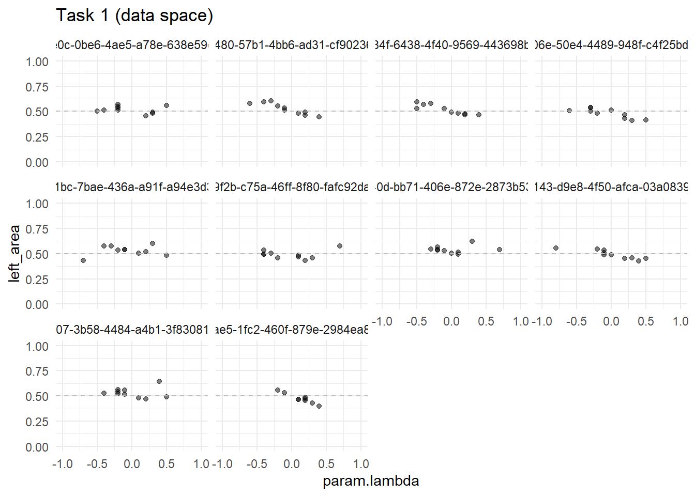
Code
task1_df %>% ggplot(aes(x = param.p, y = left_area)) +
geom_point(alpha = 0.5) +
ylim(0, 1) +
geom_hline(yintercept = 0.5, linetype="dashed", color="gray") +
labs(title = "Task 1 (data space)")Warning: Removed 1 row containing missing values or values outside the scale range
(`geom_point()`).
Code
task1_df %>% ggplot(aes(x = param.q, y = left_area)) +
geom_point(alpha = 0.5) +
ylim(0, 1) +
geom_hline(yintercept = 0.5, linetype="dashed", color="gray") +
labs(title = "Task 1 (data space)")Warning: Removed 1 row containing missing values or values outside the scale range
(`geom_point()`).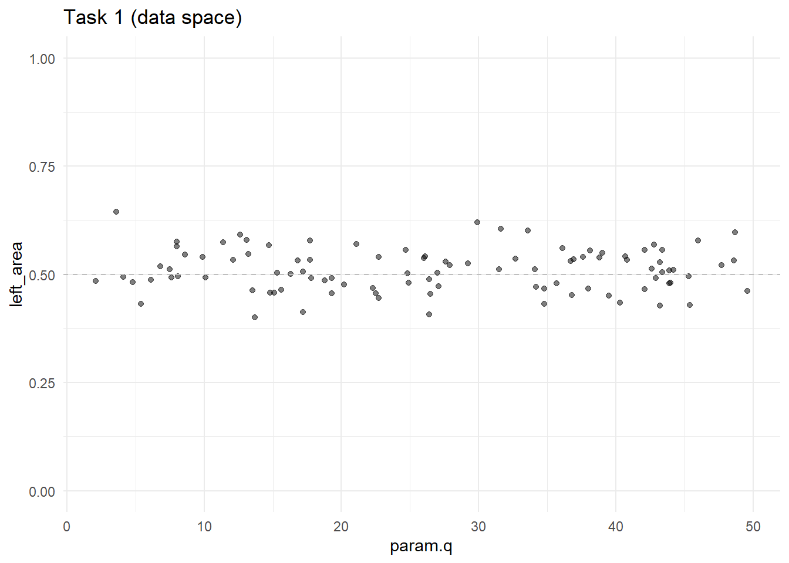
There does not seem to be any relationship between p, q and area.
Caution
For area, we could potentially calculate the physical space it occupies using pixelToMM. But what is the “visual angle” of area??
Task 2 — PDF Mode — Find highest point on the curve
Experimenting with
numDeriv
Code
x_val <- seq(-5, 5, 0.01)
y_val <- dsgt(x_val, mu = 1.7, sigma = 1.4, lambda = -0.5, p = 3.5, q = 7.5, mean.cent=F)
data.frame(x = x_val, y = y_val) %>%
ggplot(aes(x = x, y = y)) +
geom_line() +
xlim(-5, 5) + ylim(0, 1)# Trying out numDeriv
numDeriv::grad(dsgt, 1, mu = 1.7, sigma = 1.4, lambda = -0.5, p = 3.5, q = 7.5, mean.cent=F)[1] 0.005399378atan(numDeriv::grad(dsgt, 1, mu = 1.7, sigma = 1.4, lambda = -0.5, p = 3.5, q = 7.5, mean.cent=F)) * 180 / pi[1] 0.3093586numDeriv::grad(dsgt, 0, mu = 1.7, sigma = 1.4, lambda = -0.5, p = 3.5, q = 7.5, mean.cent=F)[1] 0.04467183atan(numDeriv::grad(dsgt, 0, mu = 1.7, sigma = 1.4, lambda = -0.5, p = 3.5, q = 7.5, mean.cent=F)) * 180 / pi[1] 2.557807numDeriv::grad(dsgt, -1, mu = 1.7, sigma = 1.4, lambda = -0.5, p = 3.5, q = 7.5, mean.cent=F)[1] 0.09215372atan(numDeriv::grad(dsgt, -1, mu = 1.7, sigma = 1.4, lambda = -0.5, p = 3.5, q = 7.5, mean.cent=F)) * 180 / pi[1] 5.265148
First we’ll create a dataframe containing only data related to task2:
task2_df <- task_df %>% filter(task == "task2") %>%
select(-slider.x, -slider.y) %>%
# compute all the data related answers
mutate(data.ans.x = param.mu,
data.ans.y = dsgt(param.mu, param.mu, param.sigma, param.lambda, param.p, param.q, mean.cent = FALSE),
data.select.grad = numDeriv::grad(dsgt, data.select.x, mu = param.mu, sigma = param.sigma,
lambda = param.lambda, p = param.p, q = param.q, mean.cent = FALSE),
data.select.angle = atan(data.select.grad) * 180 / pi) %>%
# compute all the data related answers in pixel space %>%
left_join(participants, by = join_by(participantId)) %>%
mutate(pixel.ans.x = data_to_pixel_x(data.ans.x),
pixel.ans.y = data_to_pixel_y(data.ans.y),
phy.ans.x = pixel_to_phy_x(pixel.ans.x, pixelToMM),
phy.ans.y = pixel_to_phy_y(pixel.ans.y, pixelToMM)) %>%
mutate(phy.select.x = pixel_to_phy_x(phy.ans.x, pixelToMM),
phy.select.y = pixel_to_phy_y(phy.ans.y, pixelToMM)) %>%
# compute visual angles
mutate(va.select.x = vis_angle(phy.select.x, dist_to_screen),
va.select.y = vis_angle(phy.select.y, dist_to_screen),
va.ans.x = vis_angle(phy.ans.x, dist_to_screen),
va.ans.y = vis_angle(phy.ans.y, dist_to_screen))
task2_df %>% head(5)First let’s explore a bit — distribution of signed error in difference spaces:
Code
task2_df %>% ggplot(aes(x = data.select.x - data.ans.x)) + geom_dots()
task2_df %>% ggplot(aes(x = data.select.y - data.ans.y)) + geom_dots()
task2_df %>% ggplot(aes(x = pixel.select.x - pixel.ans.x)) + geom_dots()
task2_df %>% ggplot(aes(x = pixel.select.y - pixel.ans.y)) + geom_dots()
task2_df %>% ggplot(aes(x = phy.select.x - phy.ans.x)) + geom_dots()
task2_df %>% ggplot(aes(x = phy.select.y - phy.ans.y)) + geom_dots()
task2_df %>% ggplot(aes(x = va.select.x - va.ans.x)) + geom_dots()
task2_df %>% ggplot(aes(x = va.select.y - va.ans.y)) + geom_dots()

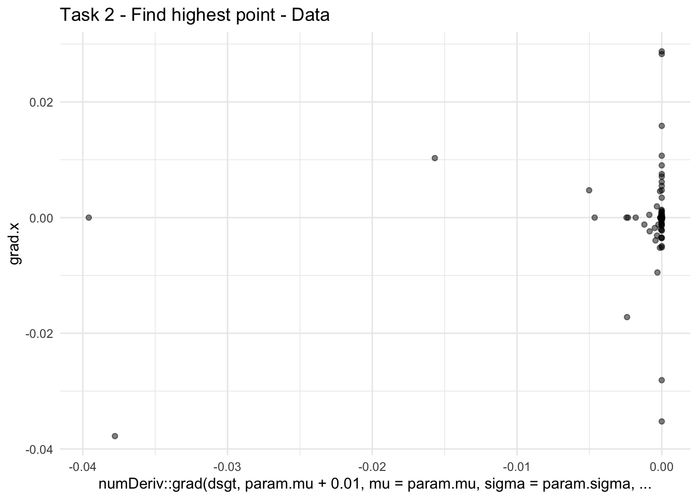

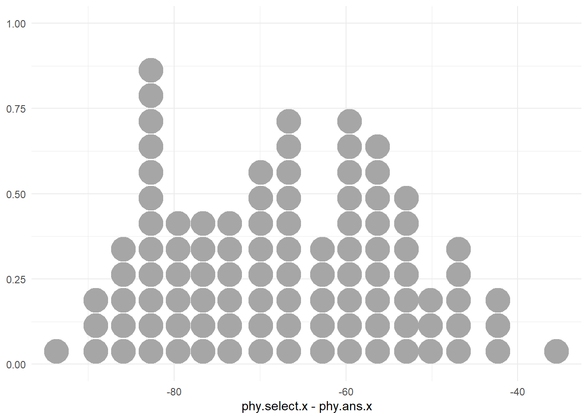
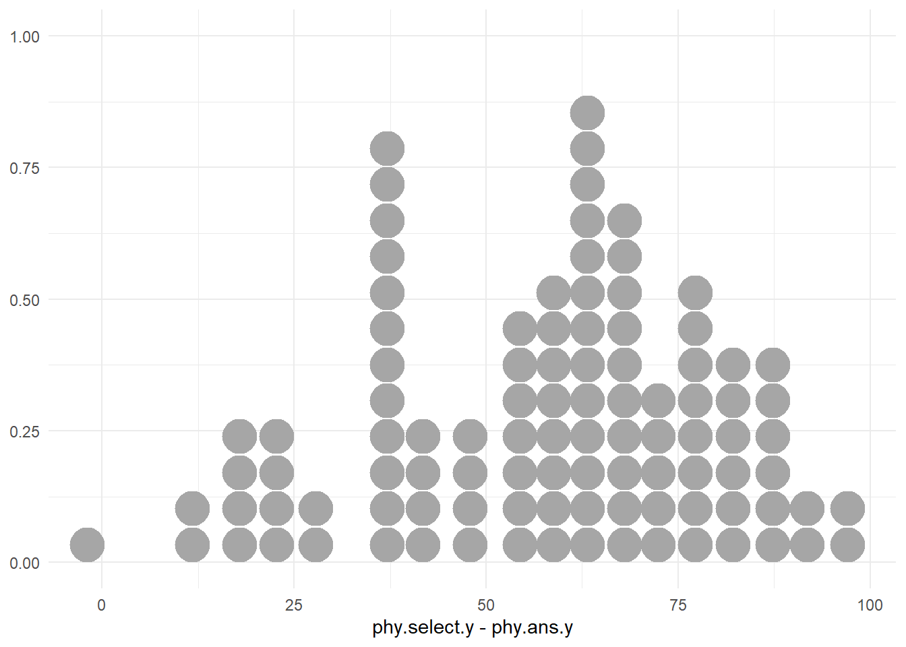
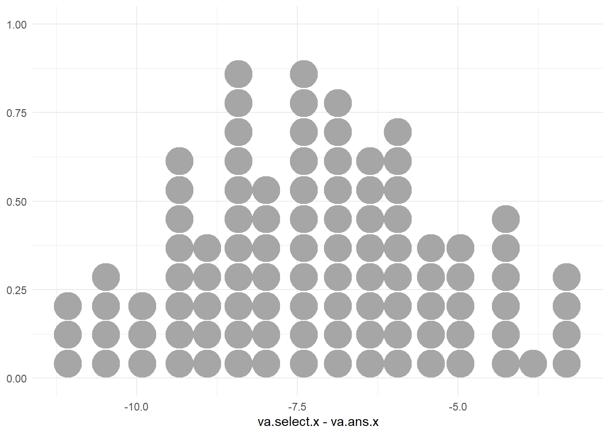
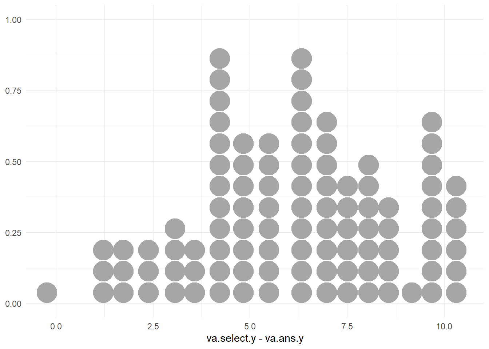
You see, it is with this physical distance that things don’t quite make sense. How is it possible that the difference is 100mm = 10cm …?
Code
task2_df %>%
ggplot(aes(y = data.select.grad,
x = param.p)) +
geom_point(alpha = 0.5) +
# another option
# ggdist::geom_dots(layout="swarm") +
labs(title = "Task 2 - Find highest point - Data")
task2_df %>%
ggplot(aes(y = data.select.angle,
x = param.p)) +
geom_point(alpha = 0.5) +
labs(title = "Task 2 - Find highest point - Data")
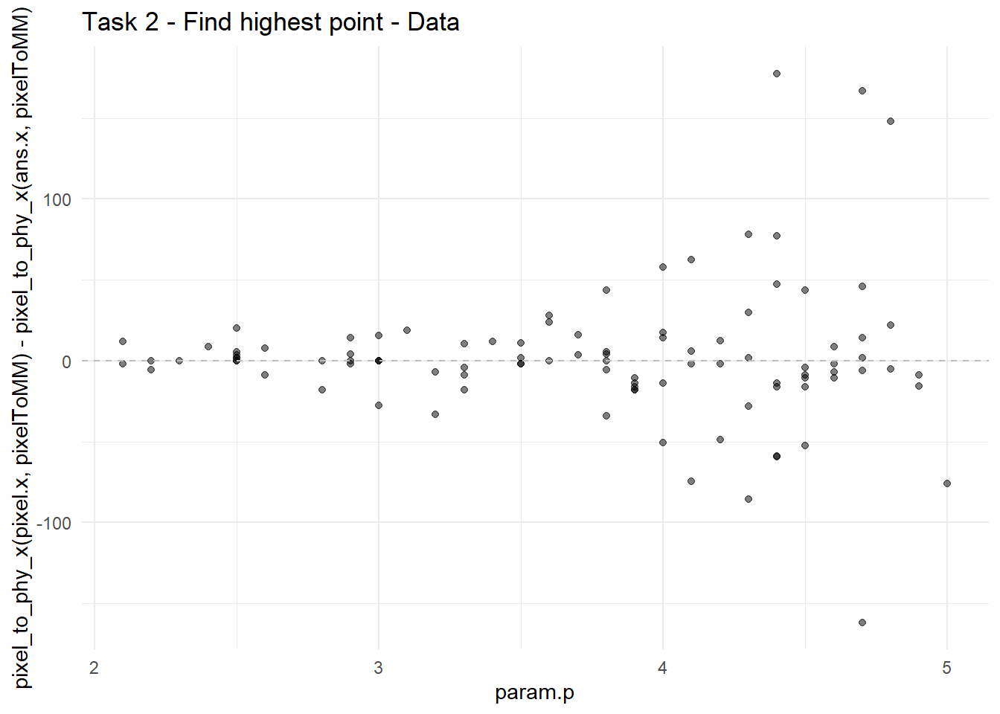
There is the theoretical angle, which is just atan(numDeriv::grad(selection)) * 180 / pi. There is also the empirical angle, which is just atan(diff.y / diff.x).
task2_df %>% mutate(data.diff.x = abs(data.select.x - data.ans.x),
data.diff.y = abs(data.select.y - data.ans.y)) %>%
mutate(empirical_angle = atan(data.diff.y / data.diff.x) * 180 / pi) %>%
select(data.select.angle, empirical_angle, participantId) %>%
filter(empirical_angle <= 5) %>%
ggplot(aes(y = abs(data.select.angle), x = empirical_angle)) +
geom_point(alpha = 0.5) +
geom_abline(intercept = 0, slope = 1, color = "gray", linetype = "dashed") +
coord_equal()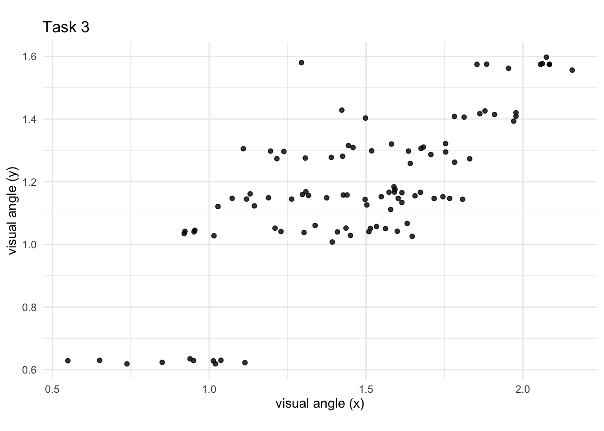
Matt said that this result looks promising to him, because it shows that we can predict from visual angle to x-coordinate? Something of the sort. I need to be more clear on this.
Code
task2_df %>%
ggplot(aes(y = data.select.x - param.mu, x = param.p)) +
geom_point(alpha = 0.5) +
geom_hline(yintercept = 0, linetype="dashed", color="gray") +
labs(title = "Task 2 - Find highest point - Data")
Code
task2_df %>% mutate(ans.x = data_to_pixel_x(param.mu)) %>%
left_join(participants) %>%
ggplot(aes(y = phy.select.x - phy.ans.x, x = param.p)) +
geom_point(alpha = 0.5) +
geom_hline(yintercept = 0, linetype="dashed", color="gray") +
labs(title = "Task 2 - Find highest point - Data")Joining with `by = join_by(participantId, pixelToMM, dist_to_screen)`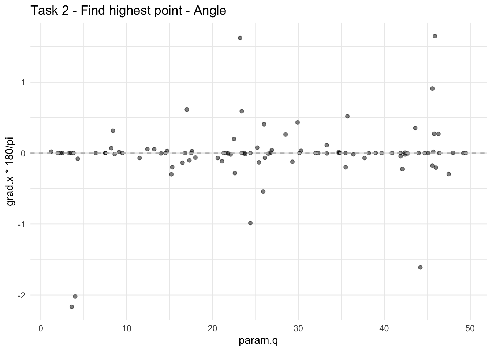
What about q?
Code
task2_df %>%
ggplot(aes(y = data.select.x - param.mu, x = param.q)) +
geom_point(alpha = 0.5) +
geom_hline(yintercept = 0, linetype="dashed", color="gray") +
labs(title = "Task 2 - Find highest point - Data")
Code
task2_df %>%
ggplot(aes(y = data.select.grad, x = param.q)) +
geom_point(alpha = 0.5) +
geom_hline(yintercept = 0, linetype="dashed", color="gray") +
labs(title = "Task 2 - Find highest point - Angle")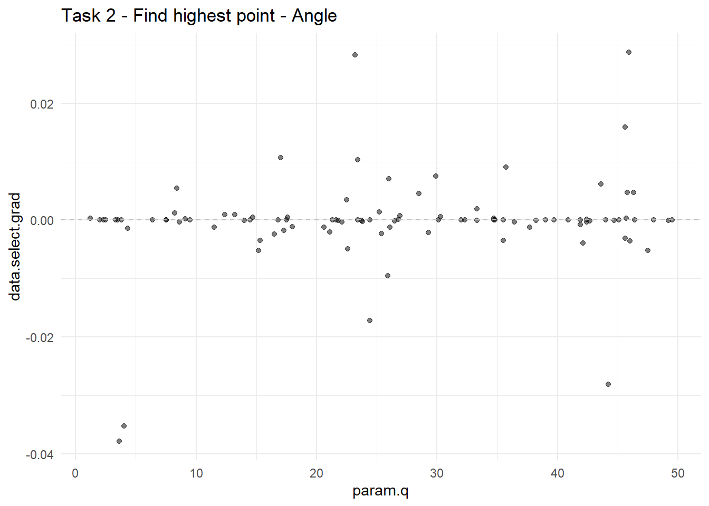
We can also try to plot the distribution of the gradient at the selected point:
# #| code-fold: true
# #| layout-ncol: 2
#
# task2_df %>%
# ggplot(aes(x = grad.x, y = 0)) + # gradient at the mode should be 0
# geom_point(alpha = 0.5)
#
# task2_df %>%
# ggplot(aes(x = grad.x)) + # gradient at the mode should be 0
# # ggdist::geom_dots() +
# ggdist::geom_swarm(side = "top")
#
# # looking at participant level
#
# task2_df %>%
# ggplot(aes(x = grad.x, y = 0)) + # gradient at the mode should be 0
# geom_point(alpha = 0.5) +
# facet_wrap(~participantId)Task 3 — CDF Median — find point where y == 0.5
First create the data frame for task 3:
task3_df <- task_df %>% filter(task == "task3") %>%
select(-slider.x, -slider.y) %>%
left_join(participants, by = join_by(participantId)) %>%
mutate(phy.select.x = pixel_to_phy_x(pixel.select.x, pixelToMM),
phy.select.y = pixel_to_phy_y(pixel.select.y, pixelToMM),
va.select.x = vis_angle(phy.select.x, dist_to_screen),
va.select.y = vis_angle(phy.select.y, dist_to_screen)) %>%
mutate(data.ans.y = 0.5,
pixel.ans.y = data_to_pixel_y(0.5),
phy.ans.y = pixel_to_phy_y(pixel.ans.y, pixelToMM),
va.ans.y = vis_angle(phy.ans.y, dist_to_screen))
task3_df %>% head(5)Code
# data space
task3_df %>% ggplot(aes(x = data.select.x, y = data.select.y - 0.5)) +
geom_point(alpha = 0.5) +
geom_hline(yintercept = 0, linetype="dashed", color="gray") +
labs(title="Task 3 -- CDF Median")
# physical space
task3_df %>% ggplot(aes(x = phy.select.x, y = phy.select.y - phy.ans.y)) +
geom_point(alpha = 0.5) +
geom_hline(yintercept = 0, linetype="dashed", color="gray") +
labs(title="Task 3 -- CDF Median")
# visual angle
task3_df %>% ggplot(aes(x = va.select.x, y = va.select.y - va.ans.y)) +
geom_point(alpha = 0.5) +
geom_hline(yintercept = 0, linetype="dashed", color="gray") +
labs(title="Task 3 -- CDF Median")
# visual angle by participiant
task3_df %>% ggplot(aes(x = va.select.x, y = va.select.y - va.ans.y)) +
geom_point(alpha = 0.5) +
geom_hline(yintercept = 0, linetype="dashed", color="gray") +
labs(title="Task 3 -- CDF Median") +
facet_wrap(~participantId)


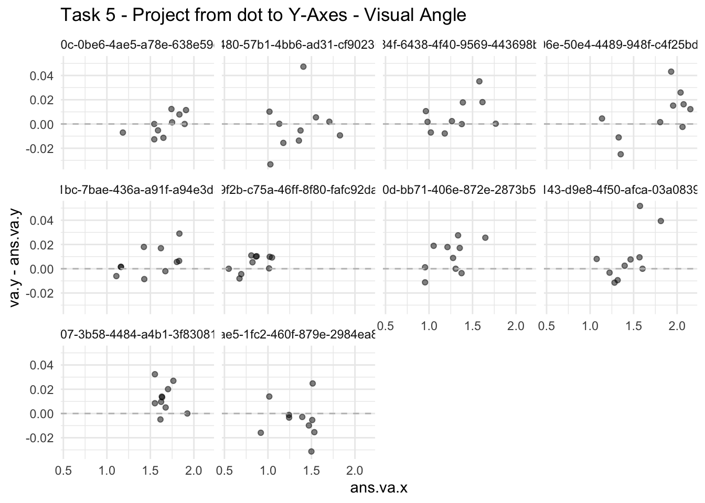
Task 4 — CDF Mode — Find slope
Recall that mode is just param.mu based on our definition. However, it is unclear how slope in the data sense transforms to slope in the physical / visual angle sense. But let’s just get the data for task 4 first:
task4_df <- task_df %>% filter(task == "task4") %>%
select(-slider.x, -slider.y) %>%
mutate(data.select.slope = dsgt(data.select.x, param.mu, param.sigma, param.lambda, param.p, param.q, mean.cent=FALSE),
data.ans.slope = dsgt(param.mu, param.mu, param.sigma, param.lambda, param.p, param.q, mean.cent=FALSE))
task4_df %>% head(5)There is some outlier in the data4, so we filter that out. Ther also doesn’t seem to be any relations between slope and how far the dot is.
4 Maryam was interpreting slope to mean something else.
task4_df <- task4_df %>% filter(participantId != "5f37a06e-50e4-4489-948f-c4f25bd38d17")Code
# let's see what this looks like
task4_df %>%
ggplot(aes(x = data.select.x, y = data.select.slope - data.ans.slope)) +
geom_point(alpha = 0.5) +
labs(title = "Task 4 -- Find Max Slope -- Data")
task4_df %>%
ggplot(aes(x = data.select.slope - data.ans.slope)) +
ggdist::geom_dots() +
labs(title = "Task 4 -- Find Max Slope -- Data")
task4_df %>%
ggplot(aes(x = data.select.slope - data.ans.slope)) +
# ggdist::geom_dots() +
ggdist::geom_swarm(side = "top", alpha = 0.5) +
labs(title = "Task 4 -- Find Max Slope -- Data") +
facet_wrap(~participantId)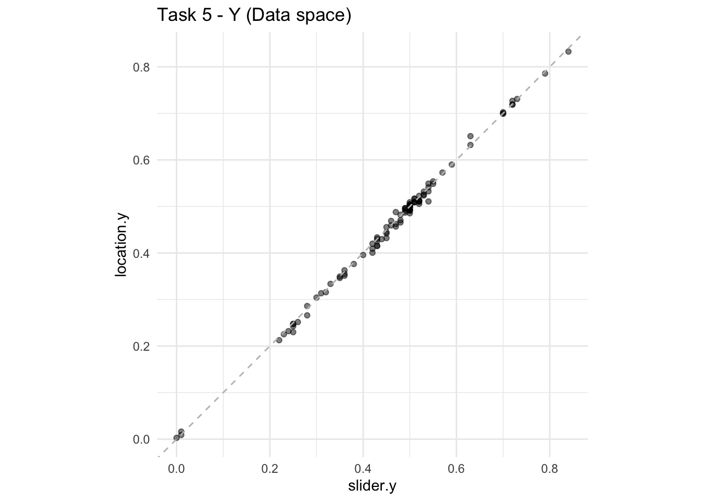
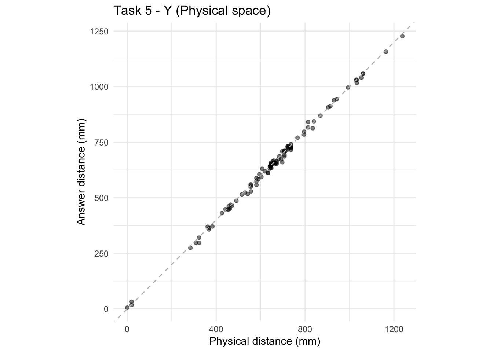
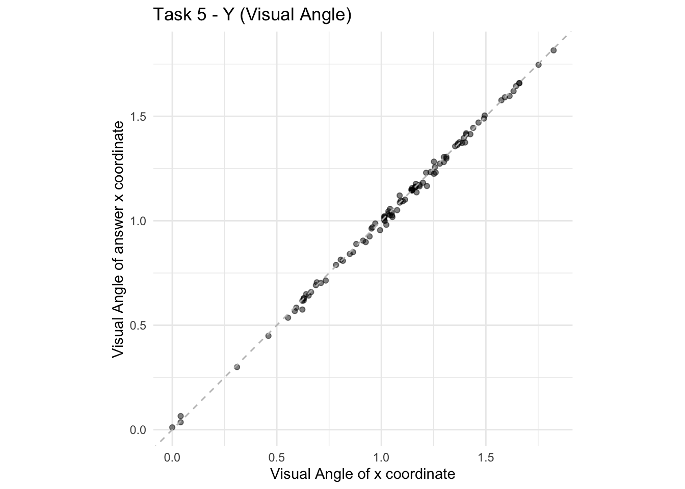
Caution
What does slope translate into, in the physical distance / visual angle sense?
If we were to plot the value of the selected x and the actual mode of the distribution, we get something that gives more variation:
Code
task4_df %>%
ggplot(aes(x = data.select.x, y = param.mu)) +
geom_point(alpha=0.8) +
geom_abline(slope = 1, intercept = 0, linetype="dashed", color="gray") +
coord_equal()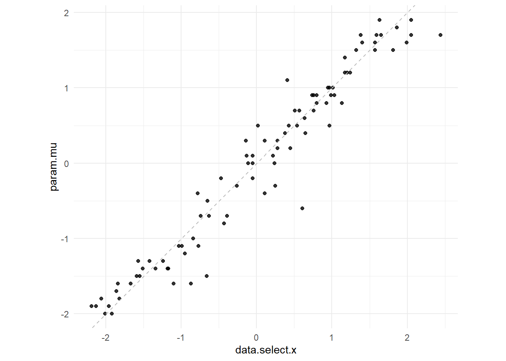
Task 5 — Project from dot to axes
First we get the data frame for task 5:
task5_df <- task_df %>% filter(task == "task5") %>%
select(participantId, task, id, data.select.x, data.select.y, slider.x, slider.y) %>%
rename(data.ans.x = data.select.x,
data.ans.y = data.select.y,
data.select.x = slider.x,
data.select.y = slider.y) %>%
left_join(participants, by = join_by(participantId)) %>%
# do all the calculations for user's selected
mutate(pixel.select.x = data_to_pixel_x(data.select.x),
pixel.select.y = data_to_pixel_y(data.select.y),
phy.select.x = pixel_to_phy_x(pixel.select.x, pixelToMM),
phy.select.y = pixel_to_phy_y(pixel.select.y, pixelToMM),
va.select.x = vis_angle(phy.select.x, dist_to_screen),
va.select.y = vis_angle(phy.select.y, dist_to_screen)) %>%
# do all the calculations for the actual answer
mutate(pixel.ans.x = data_to_pixel_x(data.ans.x),
pixel.ans.y = data_to_pixel_y(data.ans.y),
phy.ans.x = pixel_to_phy_x(pixel.ans.x, pixelToMM),
phy.ans.y = pixel_to_phy_y(pixel.ans.y, pixelToMM),
va.ans.x = vis_angle(phy.ans.x, dist_to_screen),
va.ans.y = vis_angle(phy.ans.y, dist_to_screen))
task5_df %>% head(5)How accurate were the xs?
Code
# data space
task5_df %>% ggplot(aes(y = data.select.x - data.ans.x, x = data.ans.y)) +
geom_point(alpha=0.5) +
geom_hline(yintercept = 0, color="gray", linetype="dashed") +
labs(title="Task 5 - Project from Dot to X-Axes - Data")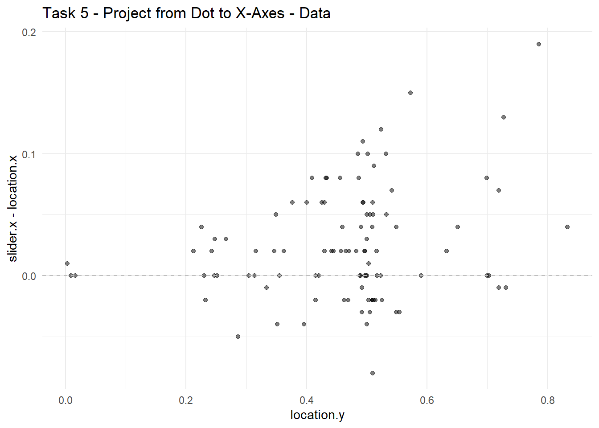
Code
# screen space
task5_df %>% ggplot(aes(x = phy.ans.y, y = phy.select.x - phy.ans.x)) +
geom_point(alpha = 0.5) +
geom_hline(yintercept = 0, linetype="dashed", color="gray") +
labs(title="Task 5 - Project from Dot to X-Axes - Screen")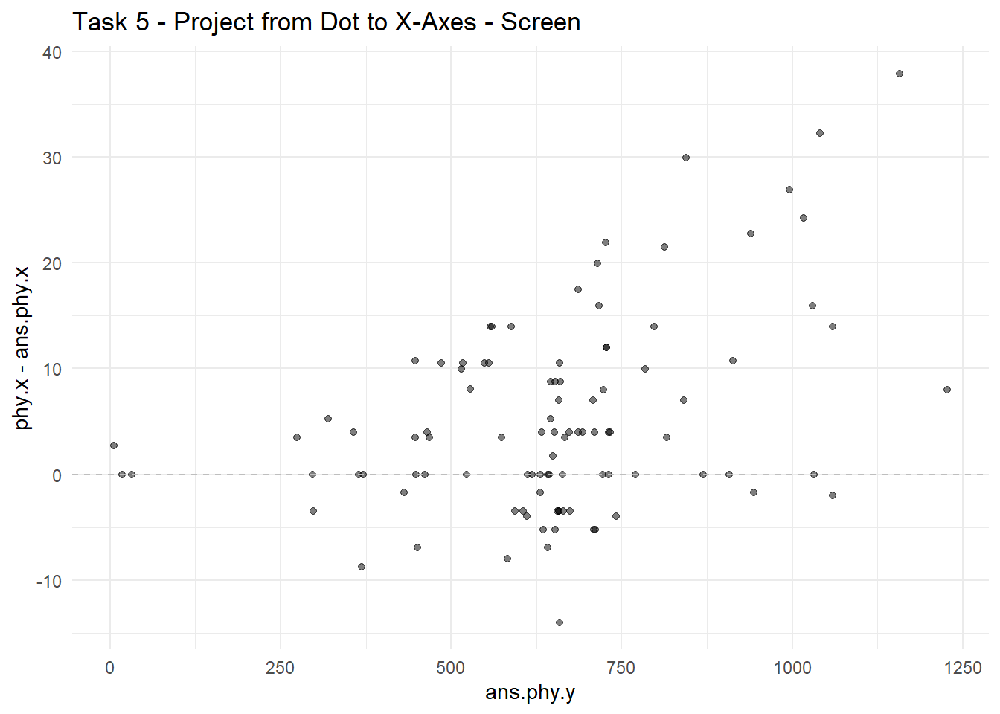
Code
# vis angle space
task5_df %>% ggplot(aes(x = va.ans.y, y = va.select.x - va.ans.x)) +
geom_point(alpha = 0.5) +
geom_hline(yintercept = 0, linetype="dashed", color="gray") +
labs(title="Task 5 - Project from Dot to X-Axes - Vis Angle")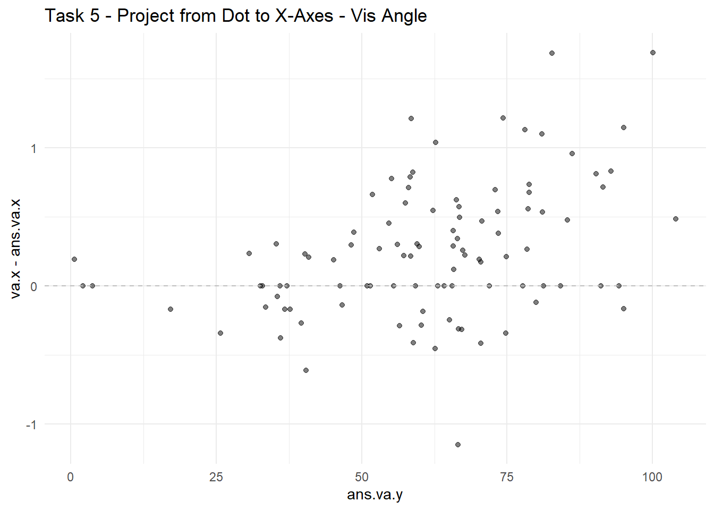
Code
# vis angle space + facet
task5_df %>% ggplot(aes(x = va.ans.y, y = va.select.x - va.ans.x)) +
geom_point(alpha = 0.5) +
geom_hline(yintercept = 0, linetype="dashed", color="gray") +
labs(title="Task 5 - Project from Dot to X-Axes - Vis Angle") +
facet_wrap(~participantId)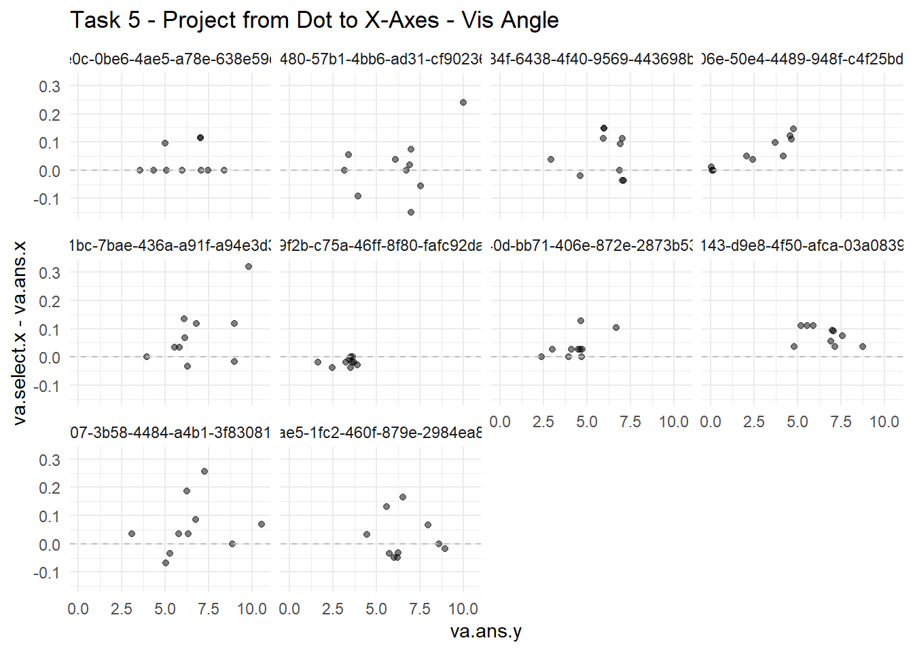
How accurate were the ys?
Code
# data space
task5_df %>% ggplot(aes(y = data.select.y - data.ans.y, x = data.ans.x)) +
geom_point(alpha=0.5) +
geom_hline(yintercept = 0, color="gray", linetype="dashed") +
labs(title="Task 5 - Project from Dot to Y-Axes - Data")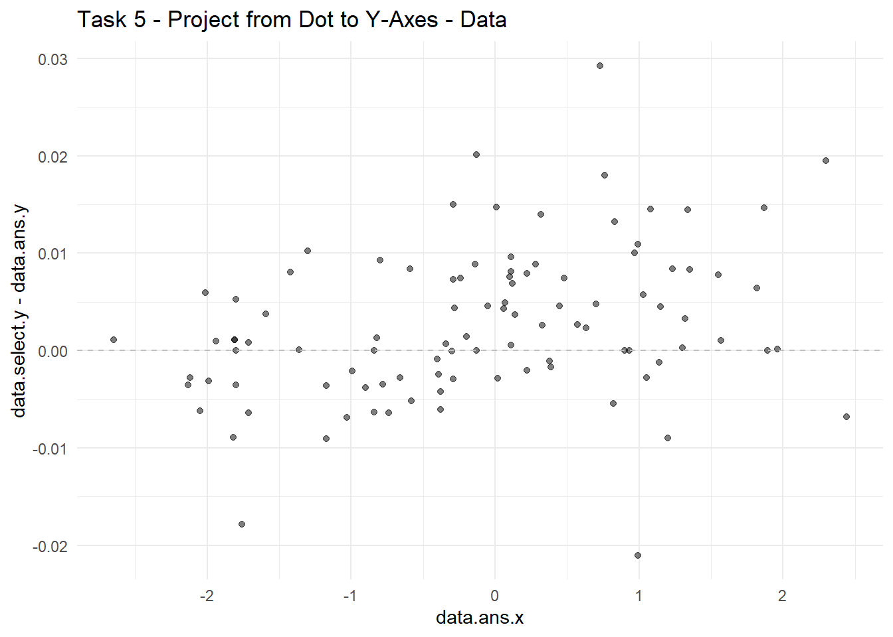
Code
# screen space
task5_df %>% ggplot(aes(x = phy.ans.x, y = phy.select.y - phy.ans.y)) +
geom_point(alpha = 0.5) +
geom_hline(yintercept = 0, linetype="dashed", color="gray") +
labs(title="Task 5 - Project from Dot to Y-Axes - Screen")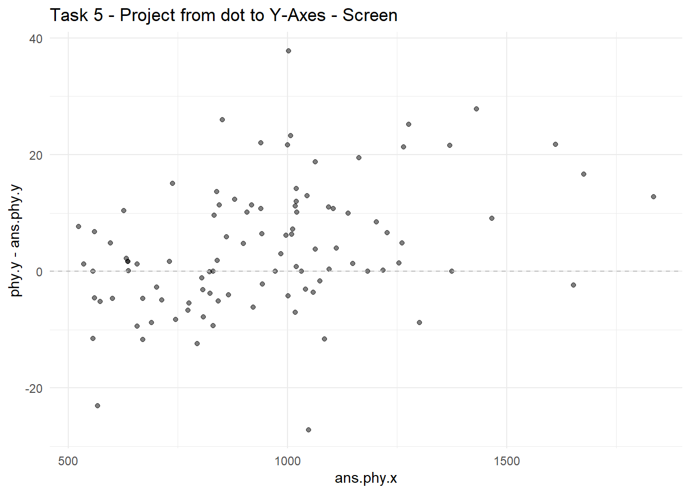
Code
# vis angle space
task5_df %>% ggplot(aes(x = va.ans.x, y = va.select.y - va.ans.y)) +
geom_point(alpha = 0.5) +
geom_hline(yintercept = 0, linetype="dashed", color="gray") +
labs(title="Task 5 - Project from Dot to Y-Axes - Vis Angle")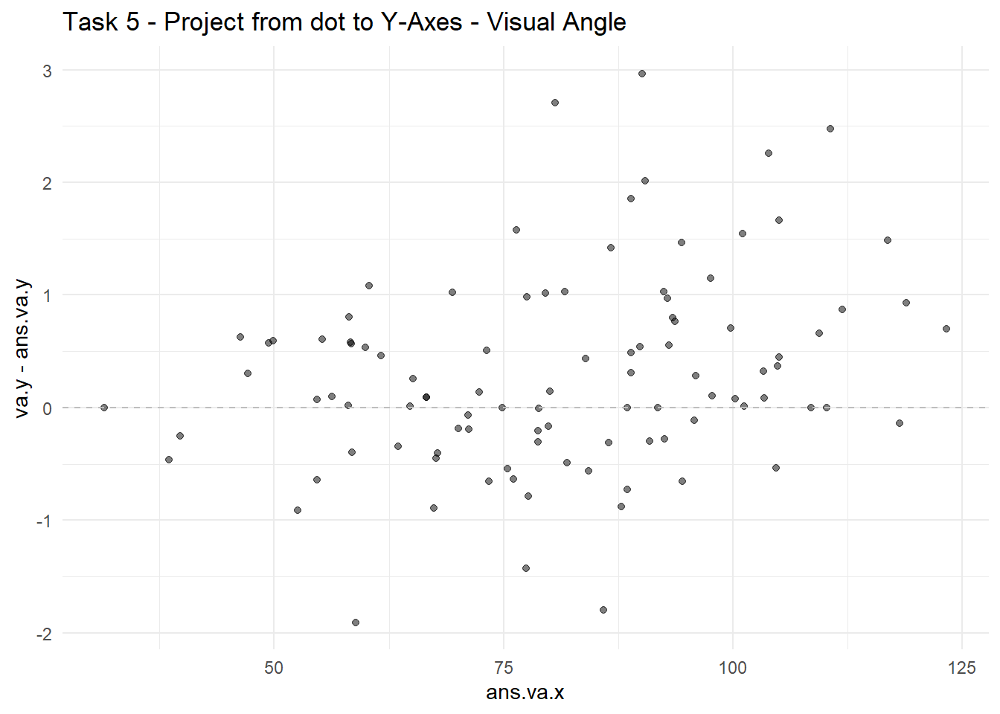
Code
# vis angle space + facet
task5_df %>% ggplot(aes(x = va.ans.x, y = va.select.y - va.ans.y)) +
geom_point(alpha = 0.5) +
geom_hline(yintercept = 0, linetype="dashed", color="gray") +
labs(title="Task 5 - Project from Dot to Y-Axes - Vis Angle") +
facet_wrap(~participantId)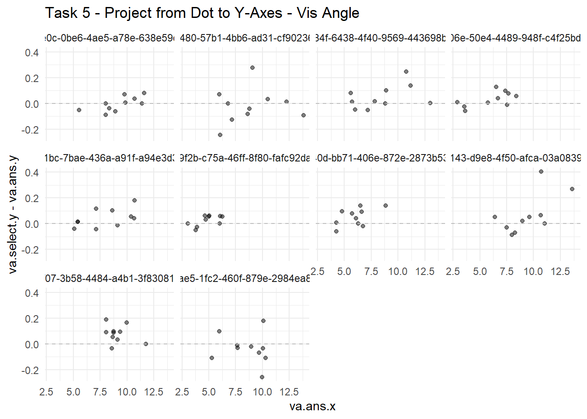